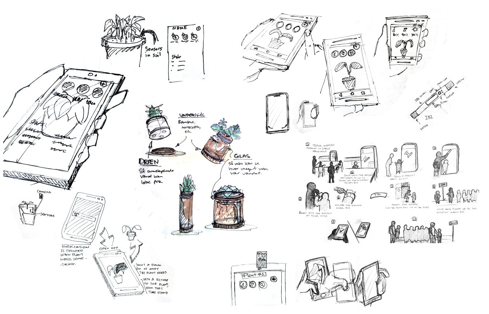

Hello, I'm Tobias!

My background
I've always had a natural curiousity and interest in exploring the reason behind why things are the way they are. Growing up with computers and having an interest in technology and innovation, I decided to move to Aalborg and study a BSc in Medialogy. I found that I enjoyed learning about other people and their work, as well as designing solutions to help them reach their goals in new and better ways. In 2019 I was among the first interaction designers (MSc) to graduate from Aalborg University. Since then I have worked on different projects, some of which you can read about here on my website.
How I work
Interaction design is all about understanding the user - their underlying goals and how they currently achieve them. It's about about using the opportunities digital technologies offer to improve the experience of everyday life. In short, it is the idea that the value an organisation creates is in the experience that the customer has with the product or service.
This is my mindset and what I'm passionate about. Designing innovative products which are not only usable, but feel great to use. I do this through an iterative process of research, user needs in context studies, ideation and design, prototyping, and testing with users. Design is not an isolated process, with one person holding all the answers. It's a collaborative effort, within the organisation, and involving the stakeholders and users. I find that a diverse team, a positive environment, as well as sharing of information visually and through dialog is pivotal to the design process.
My Interests
I enjoy being in nature, foraging and cooking and I have a passion for music production. I do strength training to stay in shape, and I like jumping into the fjord after a workout, the colder the better. I have a soft spot for games and until recently I was a game jam organiser at Create Jam. Nowadays I just attend them. I love when my work aligns with my interests - wellbeing, creativity and games.
If you look around you will find some of the cases I have worked on, which hopefully give a glimpse into my thought process and how I solve complex problems, which design is all about.
Thanks for stopping by!